First I started by importing the radiohead logo into fusion 360
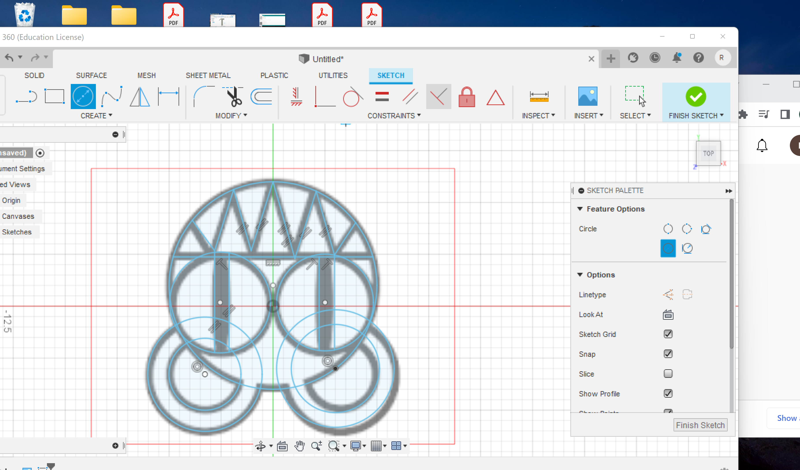I then outlined all the lines that I wanted cut on the shop bot
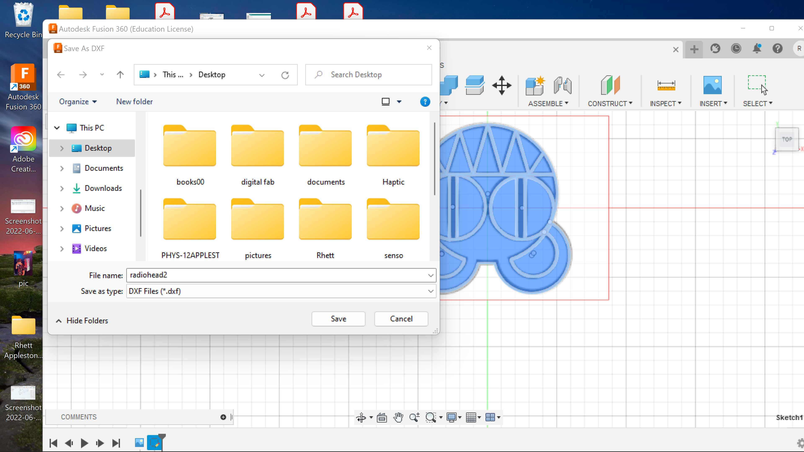I cleaned it up, and exported it as a DXF
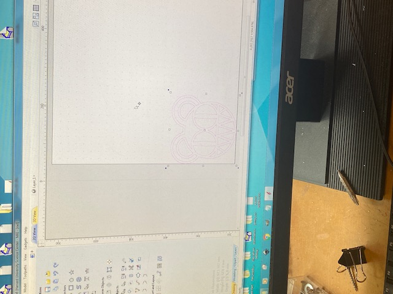I then imported it onto the shop computer's version of aspire (took me too long to realize that the free version doesnt allow you to export)
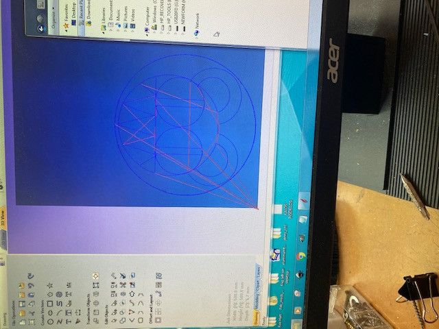Specified the cuts that I wanted and put a cutout circle around the edge
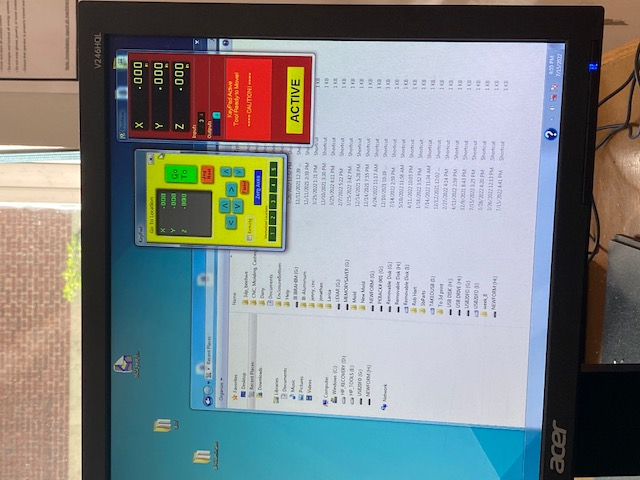I zeroed the machine and decided that since I wanted it on the clear polycarbonate I should do a test cut on wood first (next img)
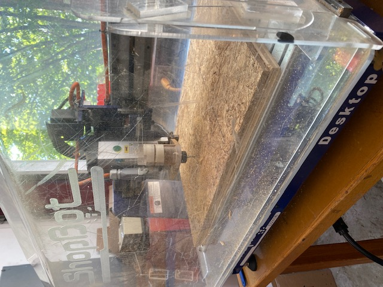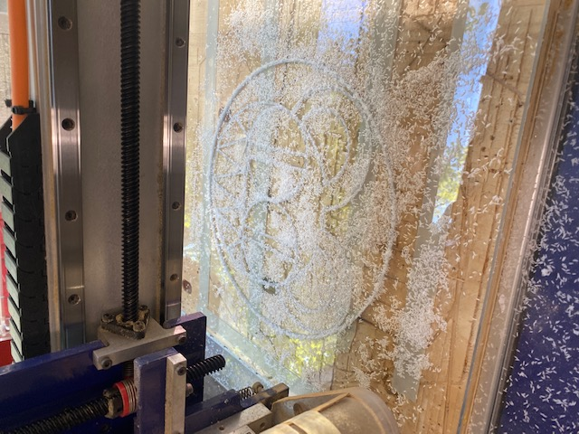
Test cut went well so I mounted the polycarbonate with a liberal ammount of tape after cleaning the bed, and started another cut
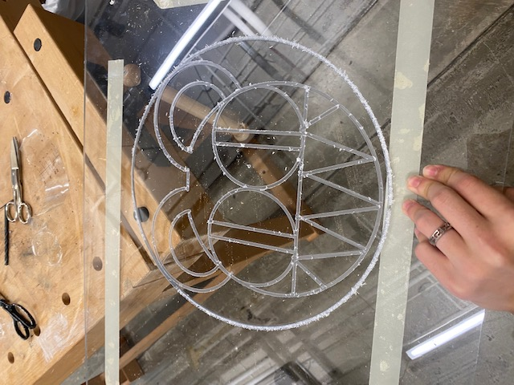Looks good, just a little cleanup needed
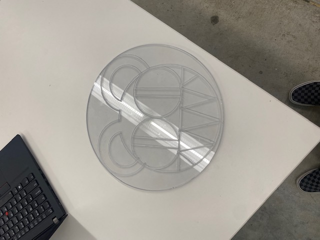Looks good! glad I made this it was one of the funnest makes of the course so far
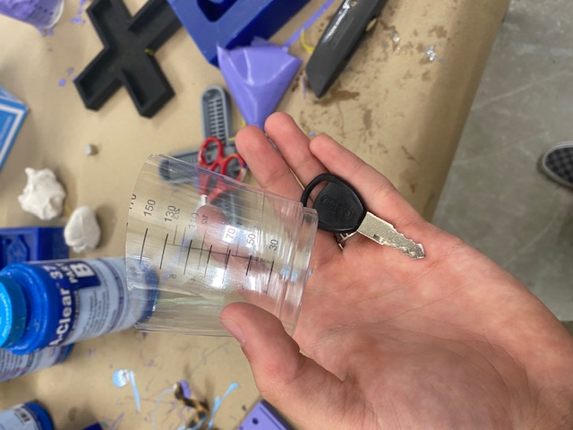For the cast I decdided to make a copy of my bike key
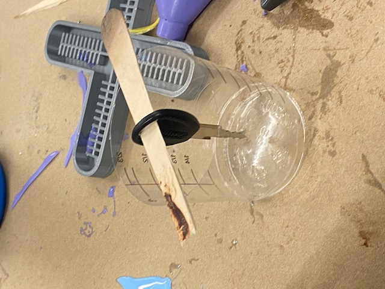Used a popcicle stick to hold it up
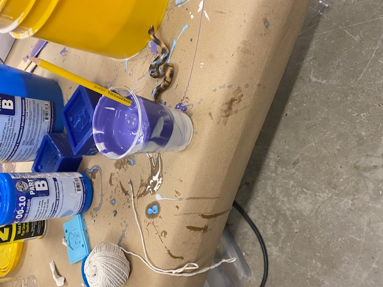Mixed the mold material as instructed (sadly a pencil was sacrificed)
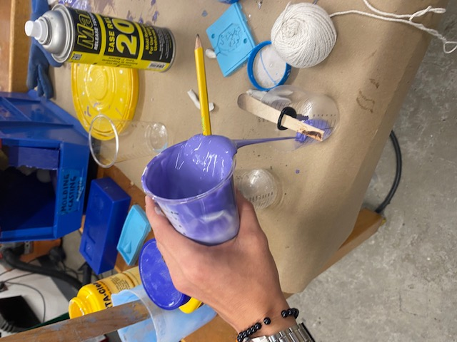Made sure to pour it like so to try to minimise boubbles
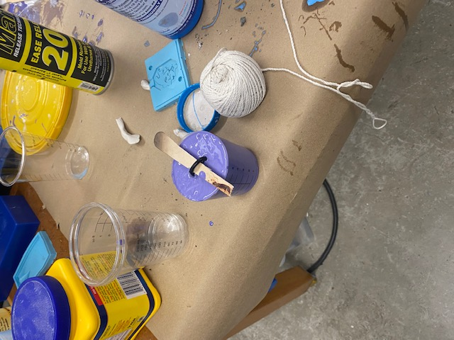looks ready to set!
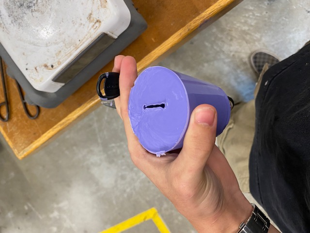Key came out fine
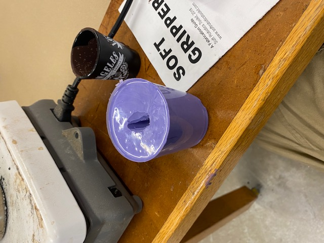I decided to widen the opening of the mold to make pouring the metal easier
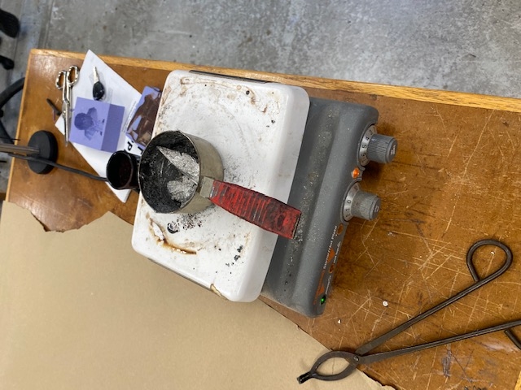Melted the metal
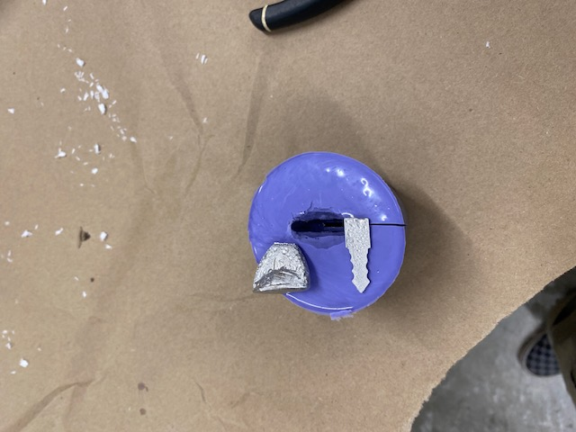First try broke off when I tried to remove it, so I made a cut in the mold to make it easier to remove
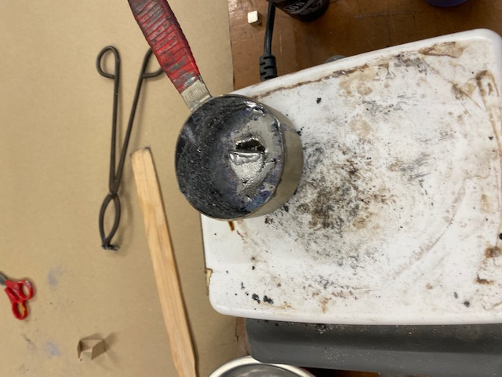AAAAAAAAAAAAAA into the metal I go
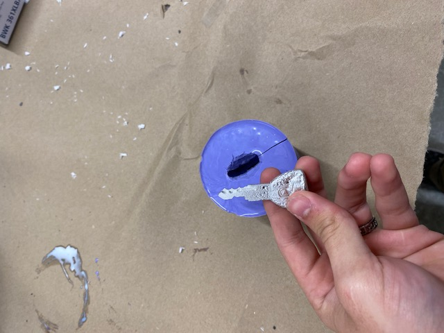Second casting was a success, Although Im not risking it in my bike lock because of the first cast.